Module 7 — ViewApp Namespaces | Pages 397-408
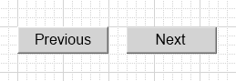
Lab 14 – Using Built-in ViewApp Namespaces
Lab 14 – Using Built-in ViewApp Namespaces
Introduction
In this lab, you will create a symbol with two buttons for navigating to the previous and next sibling
navigation items within the Line1 and Line2 areas at runtime.
When configuring animations for the buttons, you will use attributes from the Navigation
namespace to control whether the buttons are active or disabled at runtime, based on whether a
next or previous sibling navigation item is available within the area.
Then you will add a pane to Asset_Layout and assign the symbol to it. You will also configure the
divider for the pane so that it will be hidden at runtime.
Objectives
Upon completion of this lab, you will be able to:
Use the attributes in the Navigation namespace
Add custom navigation buttons to a layout
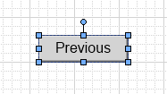
Create a Sibling Navigation Symbol
In the following steps, you will create a sibling navigation symbol with two buttons. Then you will
configure animations for the buttons.
1.
On the Graphics tab, in the Training \ Symbols toolset, create a symbol and name it
SiblingNavigation.
2.
Double-click SiblingNavigation to open it in the Graphic Editor.
3.
Draw a button on the drawing canvas, and enter Previous for the text.
The name assigned to the button is Button1. It should look similar to the following.
In this example, the Appearance \ Width property is 100 and the Appearance \ Height
property is 30.
4.
Double-click Button1 to open the Edit Animations dialog box.
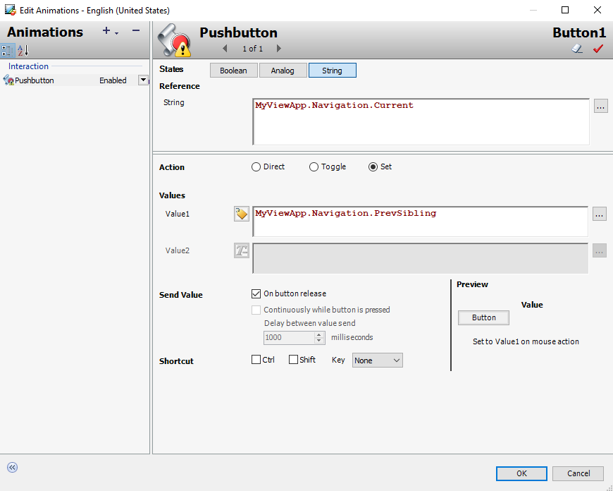
Lab 14 – Using Built-in ViewApp Namespaces
5.
Add a Pushbutton animation, and configure it as follows:
States:
String
Reference (String):
MyViewApp.Navigation.Current
Action:
Set
Values \ Value1:
(Switch to Expression or Reference mode)
MyViewApp.Navigation.PrevSibling
Send Value:
On button release checked
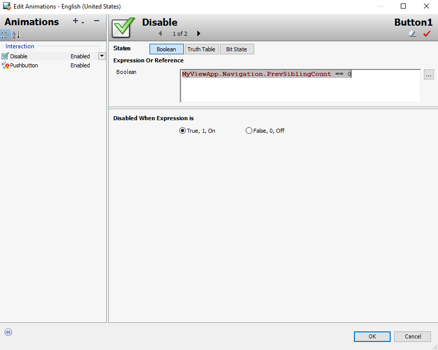
6.
Add a Disable animation, and configure it as follows:
States:
Boolean
Expression Or Reference (Boolean):
MyViewApp.Navigation.PrevSiblingCount == 0
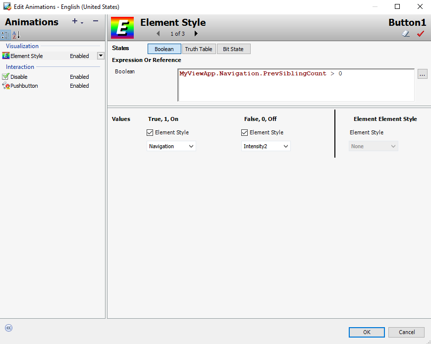
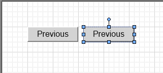
Lab 14 – Using Built-in ViewApp Namespaces
7.
Add an Element Style animation, and configure it as follows:
8.
Click OK to close the Edit Animations dialog box.
9.
On the drawing canvas, right-click Button1 and select Duplicate.
The Button1 symbol is duplicated. The name of the duplicate symbol is Button2.
10. Ensure Button2 is selected and move it to the right side of Button1.
The buttons should look similar to the following:
States:
Boolean
Expression Or Reference (Boolean):
MyViewApp.Navigation.PrevSiblingCount > 0
Values \ True, 1, On:
Element Style checked (default)
Navigation selected
Values \ False, 0, Off:
Element Style checked (default)
Intensity2 selected
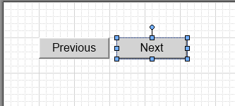
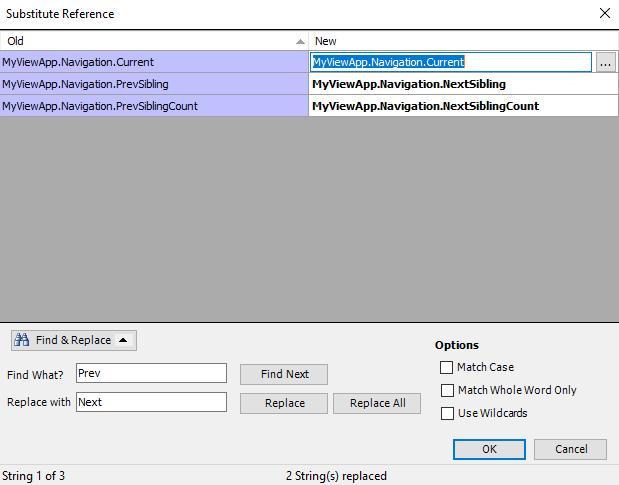
11. On the Properties tab for Button2, modify the Appearance \ Text property to Next.
The text on Button2 changes as follows:
12. Right-click Button2 and select Substitute | Substitute References.
13. Use Find & Replace to replace all occurrences of the following:
Important: Be sure to click Replace All to replace all of the references. When you are
finished, ensure that the references in the New column are as shown below.
14. Click OK to close the Substitute Reference dialog box.
15. Save and close the SiblingNavigation symbol, and check it in.
Find What?:
Prev
Replace with:
Next
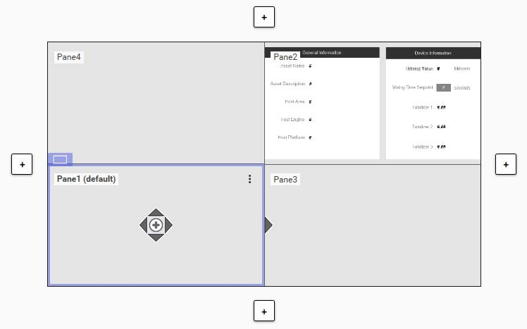
Lab 14 – Using Built-in ViewApp Namespaces
Assign the Symbol to the Asset Layout
In the following steps, you will add a pane to Asset_Layout and assign the SiblingNavigation
symbol to the new pane.
16. On the Graphics tab, in the Training \ Layouts toolset, double-click Asset_Layout to open it
in the Layout Editor.
17. With Pane1 selected, click the Add new pane up-arrow to add a pane above.
A new pane named Pane4 is added above Pane1.
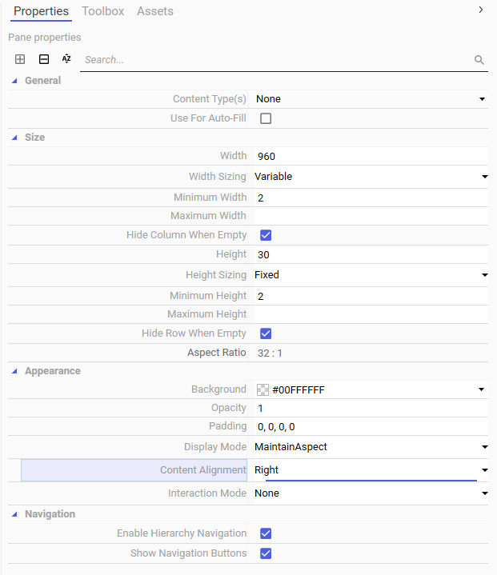
18. Select Pane4, and on the Properties tab, configure properties as follows:
Size \ Height:
30
Size \ Height Sizing:
Fixed
Appearance \ Content Alignment:
Right
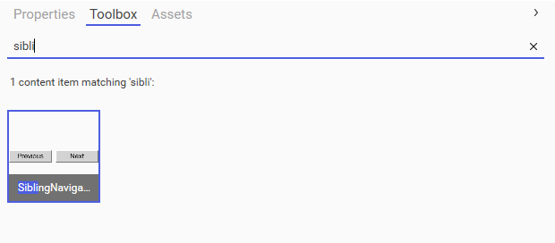
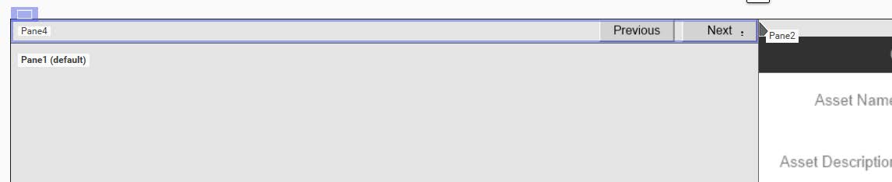
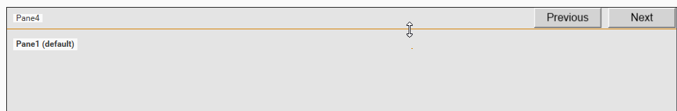
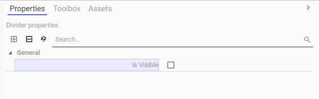
Lab 14 – Using Built-in ViewApp Namespaces
19. On the Toolbox tab, search for the SiblingNavigation symbol.
20. Drag the SiblingNavigation symbol to Pane4.
21. Click the pane divider between Pane1 and Pane4, but do not move the divider.
Divider properties appear on the Properties tab.
22. On the Properties tab, uncheck the General \ Is Visible property.
23. Save and close Asset_Layout, and check it in.
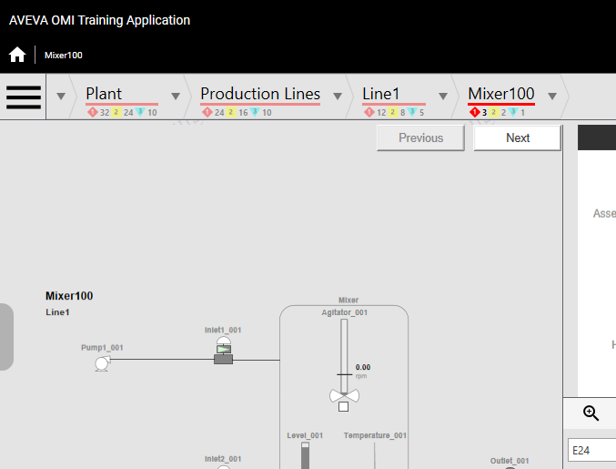
Test the ViewApp in a Preview Session
In the following steps, you will test your changes in the ViewApp preview session.
24. Switch to the ViewApp preview session.
25. Navigate to Mixer100.
Notice that the Previous and Next navigation buttons appear on the top-right corner of the
mixer graphic. The divider is not visible, which makes the navigation buttons appear to be part
of the mixer graphic.
Also notice that the Previous button is grayed or dimmed. This is because there is no
previous sibling for Mixer100 in the Line1 area, so the button is disabled and displays with the
Intensity2 element style.
The Next button is active, so you can click it to navigate to the next sibling navigation item.
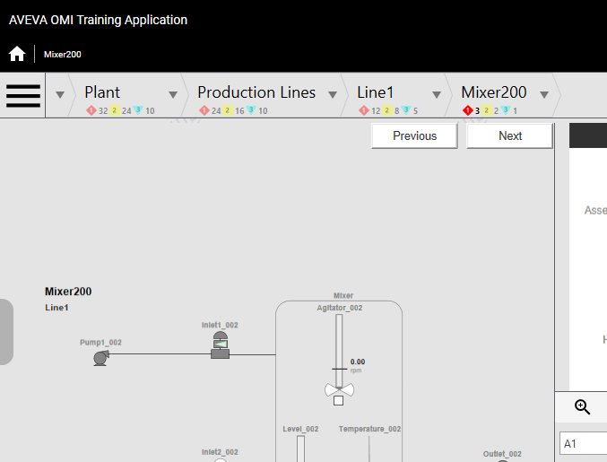
Lab 14 – Using Built-in ViewApp Namespaces
26. Click Next.
Notice that the navigation moves to Mixer200. The Previous button is now active, because
Mixer100 is the previous sibling of Mixer200.
27. Click Next two more times to navigate to Mixer400.
Now the Next button is disabled, because Mixer400 is the last sibling in the Line1 area.
Review the lab steps above and list the main configuration actions you completed.
Consider the dependencies between steps and how skipping one might affect the outcome.